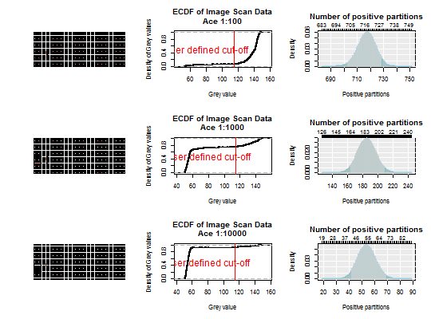

These are the results data from the White data as measured by the
UT digital PCR on Fluidigm 12.765 digital Array. The data were digtilized
from a supplementary figure "1471-2164-10-116-S1.pdf"
by White et al. (2009) BMC Genomics
Data were digitalized from the supplement material (Additional file 1. dPCR analysis of mock library control.) "1471-2164-10-116-S1.pdf" by White et al. (2009) BMC Genomics
Setup: Experimental details were described be White et al. (2009) BMC Genomics. The digitalization of the figure was done with imageJ and the "MicroArray Profile" plugin by Bob Dougherty (rpd@optinav.com) and Wayne Rasband.
Annotation: See the White et al. (2009) BMC Genomics paper for details.
White RA, Blainey PC, Fan HC, Quake SR. Digital PCR provides sensitive and absolute calibration for high throughput sequencing. BMC Genomics 2009;10:116. doi:10.1186/1471-2164-10-116.
Dougherty B, Rasband W. MicroArray Profile ImageJ Plugin n.d. http://www.optinav.com/imagej.html (accessed August 20, 2015).
str(White)#> 'data.frame': 9180 obs. of 10 variables: #> $ Image_position: num 11 11 11 11 11 11 11 11 11 11 ... #> $ Sample : chr "Ace 1:10" "Ace 1:10" "Ace 1:10" "Ace 1:10" ... #> $ X.1 : int 1 2 3 4 5 6 7 8 9 10 ... #> $ Index : int 1 2 3 4 5 6 7 8 9 10 ... #> $ Row : int 1 1 1 1 1 1 1 1 1 1 ... #> $ Column : int 1 2 3 4 5 6 7 8 9 10 ... #> $ Area : int 40 40 40 40 40 40 40 40 40 40 ... #> $ Min : int 42 37 46 36 18 44 30 15 35 44 ... #> $ Max : int 156 167 152 190 164 153 179 164 158 152 ... #> $ Mean : num 112 114 115 122 117 ... #>par(mfrow = c(3,3)) White_data <- sapply(unique(White[["Image_position"]]), function(i) White[White[["Image_position"]] == i, "Mean"]) assays <- sapply(unique(White[["Image_position"]]), function(i) unique(White[White[["Image_position"]] == i, "Sample"])) White_adpcr <- create_dpcr(White_data > 115, n = 765, assay = assays, type = "np", adpcr = TRUE)The assumed number of partitions in each run is equal to 765.The assumed volume of partitions in each run is equal to 1.The assumed volume uncertainty in each run is equal to 0.White_k <- colSums(White_data > 115) sapply(2:4, function(i) { plot_panel(extract_run(White_adpcr, i)) # Create the ECDF of the image scan data to define # a cut-off for positive and negative partitions # Plot the ECDF of the image scan data an define a cut-off plot(ecdf(White_data[, i]), main = paste0("ECDF of Image Scan Data\n", assays[i]), xlab = "Grey value", ylab = "Density of Grey values") abline(v = 115, col = 2, cex = 2) text(80, 0.5, "User defined cut-off", col = 2, cex = 1.5) # Plot the density of the dPCR experiment dpcr_density(k = White_k[i], n = 765, bars = TRUE) } )#> [,1] [,2] [,3] #> method factor,1 factor,1 factor,1 #> k 717 185 54 #> n 765 765 765 #> mean 717 185 54 #> lower 702.1094 162.8116 41.69404 #> upper 728.548 209.162 69.58861 #>par(mfrow = c(1,1))